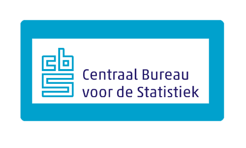

Dossier AI
AI dringt steeds verder door in ons leven zowel zakelijk als prive.
Er worden wereldwijd enorme bedragen geinvesteerd in datacentra en hardware.
De toekomst zal leren hoe de technologie onze wereld zal veranderen.
Ook binnen de wereld van testautomation is AI in opkomst. Playwright heeft onlangs drie
AI-agents
geintroduceerd die ondersteuning kunnen bieden bij het geautomatiseerd testen:
- 🎭 de planner verkent de software en schrijft een testplan
- 🎭 de generator zet een testplan om in een testfile en
- 🎭 de healer runt de testfile en haalt de fouten eruit.
Externe link 
Externe link CBS - AI trends